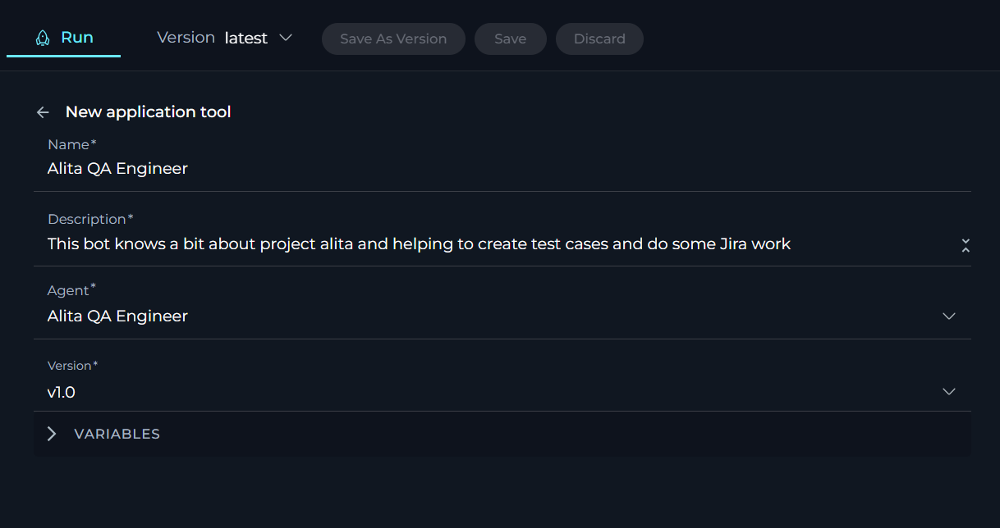

Agents
Private project - Agents menu
ELITEA Agents are a cornerstone feature within the ELITEA platform, designed to significantly enhance and expand the capabilities of AI technologies. By leveraging the advanced natural language processing capabilities of GPT models, ELITEA Agents serve as virtual assistants or "agents" that automate tasks and streamline workflows, providing users with a more efficient and effective way to interact with AI models.
What are ELITEA Agents?
ELITEA Agents are customizable virtual assistants or bots that you can create within the ELITEA interface. Each agent is tailored to handle specific tasks or sets of tasks, based on the instructions and capabilities you define. These agents integrate various components such as prompts, datasources, and external toolkits, allowing them to make informed decisions and perform actions like searching on Google, creating Jira tickets, interacting with your code in GitHub. The flexibility of ELITEA Agents enables them to work with a wide range of external toolkits, making them versatile tools for automating complex workflows.
Purpose of ELITEA Agents
The primary purpose of ELITEA Agents is to provide a structured and efficient way to interact with AI models for diverse use cases. Unlike open-ended conversations, agents are designed to achieve specific goals, tasks, or workflows. This is particularly beneficial in scenarios that involve repetitive or intricate tasks requiring multiple steps or the aggregation and processing of information from various sources. By automating these processes, ELITEA Agents help reduce manual effort and increase productivity.
How do Agents work?
Creating an Agent involves defining a set of instructions, toolkits, or goals that the agent is meant to accomplish. These instructions can range from simple to complex, incorporating steps, conditions, and actions that guide the agent's behavior. Once configured, the agent utilizes the natural language processing capabilities of the selected GPT model to interpret and execute the provided instructions. This allows the agent to autonomously perform tasks, make decisions, and adapt to changing conditions without requiring constant human intervention.
Key Features of ELITEA Agents
- Autonomy: ELITEA Agents operate independently, making decisions and taking actions based on predefined goals and instructions.
- Proactivity: Agents can proactively determine the next steps needed to achieve their objectives, even in the absence of explicit instructions.
- Integration: By combining prompts, datasources, and external toolkits, agents can seamlessly integrate decision-making processes with actionable tasks.
- Customization: Users can tailor agents to meet specific needs, defining the scope and complexity of tasks they are designed to handle.
- Scalability: ELITEA Agents can be scaled to manage a wide array of tasks across different domains, enhancing their utility and effectiveness.
By understanding and utilizing ELITEA Agents, users can unlock the full potential of AI-driven automation, transforming how tasks are managed and executed within the ELITEA platform. This not only improves efficiency but also empowers users to focus on more strategic and creative aspects of their work.
Integration with External Toolkits, Services, and APIs
ELITEA Agents are designed to be highly versatile, capable of integrating with a wide array of external toolkits, services, and APIs. This capability allows agents to extend their functionality beyond the core ELITEA platform, enabling them to perform complex and specialized tasks across various domains. By leveraging these integrations, Agents can act as powerful virtual assistants, automating and streamlining workflows to enhance productivity and efficiency.
- Internal Toolkits: - Agents, Datasources, Prompts, and Artifacts: These are the foundational components within ELITEA that agents can utilize to perform tasks, manage data, and execute workflows. By integrating these internal toolkits, agents can seamlessly coordinate actions and decisions within the ELITEA environment.
- Management Tools: - Jira, Confluence, Bitbucket, Rally: Agents can integrate with these project management and collaboration tools to manage tasks, track issues, and facilitate team collaboration. This integration allows agents to automate project updates, issue tracking, and documentation management, ensuring that teams remain aligned and informed.
- Test Management Tools - XRAY Cloud, TestRail, Zephyr Scale, QTest: By connecting with test management platforms, agents can assist in managing test cases, executing tests, and generating reports. This integration streamlines the software testing lifecycle, improving accuracy and efficiency in quality assurance processes.
- Coding Tools: - GitHub, GitLab, GitLab Org, Sonar: Integration with version control and code quality tools enables agents to manage code repositories, facilitate pull requests, and conduct code reviews. This helps streamline the development process, ensuring code integrity and facilitating collaboration among developers.
- EPAM Tools: - Report Portal, TEST IO: Agents can leverage EPAM-specific tools to enhance reporting and testing capabilities. This integration allows for automated data collection and analysis, providing insights that drive informed decision-making.
- Azure Tools: - ADO wiki, ADO plans, ADO boards: By integrating with Azure DevOps tools, agents can manage documentation, project plans, and work items. This ensures that development and operations teams can collaborate effectively, maintaining alignment with project goals and timelines.
- Other Tools: - SQL, Browser, Google Places, Open API, Custom: ELITEA Agents can interact with databases, search web, access location data, and connect with custom APIs. These integrations enable agents to perform data retrieval, automate web-based workflows, and access external data sources, reducing manual effort and enhancing data-driven decision-making.
Setting Up Integrations
To set up these integrations, users may need to perform additional configuration and authentication steps. This includes providing API keys, access tokens, or configuring webhooks and communication channels between ELITEA and the external toolkits or services. These steps ensure secure and seamless integration, allowing ELITEA Agents to function effectively within your existing technological ecosystem.
By harnessing the power of these integrations, ELITEA Agents can automate a wide range of tasks, from project management and software testing to code management and data processing. This not only enhances the capabilities of the ELITEA platform but also empowers users to achieve greater efficiency and productivity in their workflows.
Note: For more information, please check Alita Tools and Alita SDK git repos.
Creating an Agent
To set up a new agent:
- Click the + Agent button located at the top right corner.
- Fill out the Name and Description fields.
- Optionally, add tags by typing a tag name or selecting from pre-existing tags in the Tags input box.
- Select the Agent type.
- Provide instructions for selected Agent type in the Instructions field.
- Add and setup selected toolkits that agent must use.
- Optionally, add and configure Conversation Starter and Welcome Message.
- Click Save.
Your newly created agent will subsequently appear on the Agents page for your project.
How to Create Instructions
The Instructions field in Agent is a crucial component where users input the necessary background information or instructions that guide the LLM in executing agent and generating accurate and relevant responses. This section serves as the foundational knowledge base for the model to understand and process your specific requests.
How to Input Instructions
- Identify Key Information: Before entering data into the Instructions field, identify the essential details or instructions that the model needs to know to fulfill your request effectively. This could include the topic, specific terms, relevant background information, or the scope of the task.
- Enter the Details: In the Instructions field, clearly and concisely input the identified information. Ensure that the information is directly relevant to the task to maintain the agent's focus and efficiency.
- Using toolkits: For enhancing agent's capabilities, you can integrate toolkits and provide instructions how to use them and in which order. The name of toolkit can be denoted by "", (e.g. "Access_JIRA" toolkit).
How to Select an Agent Type
Selecting the right Agent type in ELITEA is essential for optimizing the performance and effectiveness of your AI-driven tasks. Each Agent type is designed to leverage specific capabilities and frameworks, catering to different use cases and operational needs. Below is a detailed overview of the available Agent types and their ideal applications:
ReAct
- Description: The ReAct Agent type is designed for straightforward, linear tasks that require minimal context. Users can specify the desired actions and add necessary toolkits using fields such as Actor, Goals, Instructions, and Constraints to clearly define the agent's behavior.
- Best For: Simple tasks with clear, direct instructions where the agent's actions are well-defined and do not require extensive context or interaction history.
XMLChat
- Description: Similar to ReAct, but utilizes XML for tool integration instead of JSON. This makes XMLChat more suitable for models like LLama and Anthropic, which may benefit from XML's structured format.
- Best For: Scenarios where XML is preferred for tool integration, particularly with LLama and Anthropic models.
OpenAI
- Description: OpenAI Agents are built on the LangChain backend and are specifically designed for integrations with Azure OpenAI Service. These agents excel in generating human-like text and handling a wide range of conversational tasks.
- Best For: Tasks requiring high-quality natural language understanding and generation, such as customer support, content creation, and complex query resolution.
Pipeline
- Description: Similar to OpenAI, Pipeline Agents are also based on the LangChain backend and work exclusively with Azure OpenAI Service integrations. They are designed to handle complex workflows and data processing tasks. Instructions must be written in YAML format.
- Best For: Scenarios that require structured workflows and data processing capabilities, leveraging the power of Azure OpenAI Service.
Each Agent type in ELITEA is crafted to maximize the strengths of its underlying models and frameworks. Selecting the appropriate Agent type based on your specific task requirements and desired outcomes will ensure optimal performance and efficiency. For more detailed guidance on selecting the right Agent type and crafting effective instructions, please refer to the Agent Frameworks document.
How to select and configure Toolkits
Toolkits are integrations with external or ELITEA's internal services, toolkits and APIs which allows to enhance Agents to use various resources and do the tasks.
To add a new toolkit:
- Click the + icon under TOOLS section.
- Select the desired tool from the dropdown list. The New tool configuration section is opened.
- Configure it accordingly to provide agent access to this tool.
- Click the arrow icon next to the New tool to complete the setup and move back to the main menu of Agent configuration.

To edit already created toolkit:
- Click the name of the already created Tool.
- The New [tool_name] tool configuration section is opened.
- Modify the configuration of the tool accordingly
- Click the arrow icon next to the New [tool_name] tool to complete the changes and move back to the main menu of Agent configuration.
The following internal Tools are available:
Agent toolkit
The Agent toolkit provides a meta-level functionality by allowing your Agent to incorporate other pre-configured agents within your ELITEA project. This recursive capability enriches the Agent's functionality, enabling complex, layered interactions and processes.
To configure Agent toolkit:
- Click the + icon under Tools section.
- Select the Prompt tool from the dropdown list.
- The New Agent tool configuration section is opened.
- Name: Provide informative name for the agent (toolkit).
- Description: provide informative description for the agent (toolkit).
- Agent: Select the agent from the dropdown list that you want to use as a toolkit for the agent. Note: If you select the agent for the first time, the name and description of the selected agent will be pulled and displayed as the name/description for the toolkit. Later you can modify them if needed.
- Version: Select the available version of the selected agent from the dropdown list.
- Click the arrow icon next to the New Agent tool to complete the setup and move back to the main menu of Agent configuration.

Datasource toolkit
The Datasource toolkit empowers your Agent by providing access to pre-configured datasources within your ELITEA project. This toolkit facilitates the integration of structured data into the Agent's operations, enhancing its ability to process and analyze information efficiently.
To configure Datasource toolkit:
- Click the + icon under Tools section.
- Select the Datasource tool from the dropdown list.
- The New datasource tool configuration section is opened.
- Name: Provide informative name for the datasource (toolkit).
- Description: Provide informative description for the datasource (toolkit).
- Datasource: Select the datasource from the dropdown list that you want to use as a toolkit for the agent. Note: If you select the datasource for the first time, the name and description of the selected datasource will be pulled and displayed as the name/description for the toolkit. Later you can modify them if needed.
- Action: Select the required action type that will be used by agent (either Search or Chat). This will allow Agent to use information from selected datasource either by searching it or by chating with it.
- Click the arrow icon next to the New datasource tool to complete the setup and move back to the main menu of Agent configuration.
Prompt toolkit
The Prompt toolkit allows your Agent to utilize pre-configured prompts from your ELITEA project. This integration enables the Agent to leverage existing prompt configurations to streamline interactions and responses, ensuring consistency and accuracy in its engagements.
To configure Prompt toolkit:
- Click the + icon under Tools section.
- Select the Prompt tool from the dropdown list.
- The New Prompt tool configuration section is opened.
- Name: Provide informative name for the prompt (toolkit).
- Description: Provide informative description for the prompt (toolkit).
- Datasource: Select the prompt from the dropdown list that you want to use as a toolkit for the agent. Note: If you select the prompt for the first time, the name and description of the selected prompt will be pulled and displayed as the name/description for the toolkit. Later you can modify them if needed.
- Version: select the available version of the selected prompt from the dropdown list.
- Click the arrow icon next to the New Prompt tool to complete the setup and move back to the main menu of Agent configuration.
IMPORTANT: Currently, Agents don't support prompts with variables. Variable for agent is input parameter, if you have “default” you need to bake it into the prompt.

Browser toolkit
The Browser toolkit significantly enhances the capabilities of your Agent by integrating robust search engine functionalities directly into its operations. This toolkit enables the Agent to access and search the web, thereby enriching the LLM with a vast array of information available online. This integration allows for a more informed and responsive Agent, capable of leveraging up-to-date web data in its tasks.
To configure Browser toolkit:
- Click the + icon under Tools section.
- From the dropdown list, select the Browser tool to open the configuration settings.
- The New Browser tool configuration section is opened.
- Name: Assign a descriptive name to the browser toolkit for easy identification within Agent's instructions.
- Description: Provide a brief description of the browser toolkit's purpose and how it integrates with your workflow.
- API key: Input the API key for the CSE that you have configured for the selected search engine. Note: This is required for Google tool only. You have two choices for providing the necessary credentials:
- Password: Enter your API key value directly into the provided field.
- Secret: Select a pre-configured secret from the dropdown list. This secret should have been set up previously in Secrets page for secure storage and retrieval.
- CSE ID: Input the Custom Search Engine ID configured for your selected search engine. Note: This is required for Google tool only.
- Tools: Choose which search engines to integrate by selecting from the available options:
- Wiki: Include Wikipedia search capabilities.
- Single URL Crawler: This tool is designed to crawl data from a specific web page within the Agent's context, making it ideal for targeted data extraction tasks.
- Multi URL Crawler: Use this tool to crawl data from multiple specified web pages within the Agent's context. It is suitable for broader data gathering operations across various sources.
- Get HTML Content: This tool allows you to retrieve the HTML content of a specified web page within the Agent's context, providing direct access to the page's structural data.
- Google: Integrate Google for comprehensive search functionalities. For creating CSE ID and API key for Google, please check the Programmable Search Engine page.
- Click the arrow icon next to the New Browser tool to complete the setup and move back to the main menu of Agent configuration.

Confluence toolkit
The Confluence toolkit seamlessly integrates Confluence, a widely-used platform for team collaboration and content management, into your Agent's toolkit. This tool enhances the Agent's knowledge base with user-specific or project-specific data from Confluence, enriching its context and response accuracy.
To configure Confluence toolkit:
- Click the + icon under the Tools section.
- Select the Confluence tool from the dropdown list.
- The New Confluence tool configuration section is opened.
- Name: Provide an informative name for the Confluence toolkit.
- Description: Provide a detailed description of the Confluence toolkit's purpose.
- URL: Enter the URL to your Confluence instance (e.g.,
https://www.kb.epam.com/). The URL should be the base link as detailed handling is managed via the instructions. - Authentication Options: Choose your preferred method for secure connection:
- API Key: Select this option if you are using an API key for authentication. You have two choices for providing the necessary credentials:
- Password: Enter your API key value directly into the provided field.
- Secret: Select a pre-configured secret from the dropdown list. This secret should have been set up previously in Secrets page for secure storage and retrieval.
- Username: Additionally, you will need to input the Username associated with your Confluence account to complete the authentication process.
- Token: Select this option if you are using a token for authentication. Similar to the API key, you have two choices for providing the necessary credentials:
- Password: Enter the your token value directly into the provided field.
- Secret: Select a pre-configured secret from the dropdown list. This secret should have been set up previously in Secrets page for secure storage and retrieval.
- API Key: Select this option if you are using an API key for authentication. You have two choices for providing the necessary credentials:
- Hosting Option: Select the appropriate hosting type for your Jira setup:
- Cloud: If your Confluence is hosted on Atlassian’s cloud.
- Server: If your Confluence is hosted on your own servers or an enterprise environment. Important Note: When connecting to Epam's Confluence, ensure you select the Server option to establish the correct configuration.
- Hosting Option: Select the appropriate hosting type for your Confluence setup:
- Cloud: If your Confluence is hosted on Atlassian’s cloud.
- Server: If your Confluence is hosted on your own servers or an enterprise environment. Important Note: When connecting to Epam's Confluence, ensure you select the Server option to establish the correct configuration.
- Tools: Enable the specific tools you need for your integration:
- Get pages with the label: Check this to retrieve pages associated with a specific label.
- Search pages: Check this to enable searching for pages within Confluence.
- Create page: Enable this to allow the agent to create a new page in Confluence.
- Create pages: Enable this to allow the agent to create multiple pages in Confluence.
- Get page tree: Enable this to retrieve the hierarchical structure of pages in Confluence.
- Delete page: Enable this to allow the agent to delete a page.
- Update page by id: Enable this to allow the agent to update existing page by page id.
- Update page by title: Enable this to allow the agent to update page by title.
- Update labels: Enable this to allow the agent to update page labels.
- Update pages: Enable this to allow the agent to update multiple pages in Confluence.
- Site search: Enable this to search pages in Confluence.
- Search by title: Enable this to allow the agent to search existing page by page id.
- Read page by id: Enable this to allow the agent to read and show the content of the existing page by page id.
- Advanced Settings: Configure additional settings to control data fetching and presentation:
- Pages limit per request: Set the maximum number of pages to retrieve per request (e.g.,
5). - Max total pages: Define the maximum number of pages to retrieve in total (e.g.,
10). - Number of retries: Specify how many times the tool should retry after a failure (e.g.,
2). - Min retry, sec: Set the minimum number of seconds to wait before retrying (e.g.,
10). - Max retry, sec: Set the maximum number of seconds to wait before retrying (e.g.,
60).
- Pages limit per request: Set the maximum number of pages to retrieve per request (e.g.,
- Click the arrow icon next to the New Confluence tool to complete the setup and return to the main menu of Agent configuration.

Jira toolkit
The Jira toolkit enables a direct integration with Jira, allowing users to manage issues and projects directly from the ELITEA platform. This tool streamlines project management tasks by enabling real-time interactions and updates through the Agent, enhancing productivity and project tracking.
To configure Jira toolkit:
- Click the + icon under Tools section.
- Select the Jira tool from the dropdown list.
- The New Jira tool configuration section is opened.
- Name: Provide a unique name to identify your Jira toolkit within ELITEA.
- Description: Offer a concise description of what the integration is intended for.
- URL: Enter the URL to your Jira instance (e.g.,
https://www.jira.epam.com/jira/). - Authentication Options: Choose your preferred method for secure connection:
- API Key: Select this option if you are using an API key for authentication. You have two choices for providing the necessary credentials:
- Password: Enter your API key value directly into the provided field.
- Secret: Select a pre-configured secret from the dropdown list. This secret should have been set up previously in Secrets page for secure storage and retrieval.
- Username: Additionally, you will need to input the Username associated with your Jira account to complete the authentication process.
- Token: Select this option if you are using a token for authentication. Similar to the API key, you have two choices for providing the necessary credentials:
- Password: Enter the your token value directly into the provided field.
- Secret: Select a pre-configured secret from the dropdown list. This secret should have been set up previously in Secrets page for secure storage and retrieval.
- API Key: Select this option if you are using an API key for authentication. You have two choices for providing the necessary credentials:
- Hosting Option: Select the appropriate hosting type for your Jira setup:
- Cloud: If your Jira is hosted on Atlassian’s cloud.
- Server: If your Jira is hosted on your own servers or an enterprise environment. Important Note: When connecting to Epam's Jira, ensure you select the Server option to establish the correct configuration.
- Tools - the following tools are avaialble for selection:
- Search using JQL: To enable searching for Jira issues using Jira Query Language.
- Create issue: To allow the creation of new issues within Jira.
- Update issue: To enable updating existing Jira issues.
- List comments: To allow showing available comments of the Jira issue.
- Add comments: To allow adding comments to Jira issues.
- List projects: To enable listing all Jira projects.
- Set issue status: To set the status of Jira issues.
- Get specific field info: To allow getting info from the specific Jira field.
- Advanced Settings: Adjust the advanced settings to fine-tune the toolkit's operation:
- Verify SSL: Check this to enable SSL verification for secure connections to your Jira instance.
- Click the arrow icon next to the New Jira tool to complete the setup and move back to the main menu of Agent configuration.
GitHub toolkit
The GitHub toolkit integrates GitHub into your Agent, allowing it to access and interact with repositories directly. This toolkit enhances the Agent's capabilities by providing it with user-specific or project-specific data from GitHub, facilitating better version control and development process integration.
To configure GitHub toolkit:
- Click the + icon under Tools section.
- Select the GitHub tool from the dropdown list.
- The New GitHub tool configuration section is opened.
- Name: Assign a distinctive name to your GitHub toolkit integration.
- Description: Give a concise description that outlines the integration's intended purpose.
- Repository: Enter the name of the GitHub repository you wish to integrate (e.g.
ProjectAlita/projectalita.github.io) Main branch: Specify the main branch of your repository, typicallymain. - Authentication Options: Choose your preferred method for secure connection:
- Private Key: Select this option if you are using an Private key for authentication.
- App ID: Enter the App ID associated with your GitHub integration.
- Private Key: Enter the configured Private key. You have two choices for providing the necessary credentials:
- Password: Enter your Private key value directly into the provided field.
- Secret: Select a pre-configured secret from the dropdown list. This secret should have been set up previously in Secrets page for secure storage and retrieval.
- Token: Select this option if you are using a token for authentication. Similar to the Private key, you have two choices for providing the necessary credentials:
- Password: Enter the your token value directly into the provided field.
- Secret: Select a pre-configured secret from the dropdown list. This secret should have been set up previously in Secrets page for secure storage and retrieval.
- Password: Select this option if you are using your GitHub account password for authentication.
- Password: Enter the password associated with your GitHub account. Similar to previous options, you have two choices for providing the necessary credentials:
- Password: Enter your password value directly into the provided field.
- Secret: Select a pre-configured secret from the dropdown list. This secret should have been set up previously in Secrets page for secure storage and retrieval.
- Username: Additionally, you will need to input the Username associated with your GitHub account to complete the authentication process.
- Password: Enter the password associated with your GitHub account. Similar to previous options, you have two choices for providing the necessary credentials:
- Tools: Enable the tools that you require for interacting with your GitHub repository:
- Get issues: Enables retrieval of issues from the repository.
- Get issue: Allows fetching details of a specific issue.
- Comment on issue: Permits adding comments to issues.
- List open pull requests (PRs): Lists all open pull requests.
- Get pull request: Retrieves details of a specific pull request.
- List pull request files: Lists the files changed in a pull request.
- Create pull request: Enables the creation of new pull requests.
- Create file: Allows for creating new files in the repository.
- Read file: Enables reading the contents of files.
- Update file: Permits updating existing files.
- Delete file: Allows for the deletion of files.
- List files in branch: Lists all files in a specific branch.
- List branches in repo: Lists all branches in the repository.
- Set active branch: Sets a specific branch as the active one.
- Create branch: Enables the creation of new branches.
- Get files from directory: Retrieves all files within a specified directory.
- Click the arrow icon next to the New GitHub tool to complete the setup and move back to the main menu of Agent configuration.

Gitlab toolkit
Similar to the GitHub toolkit, the Gitlab toolkit integrates your Agent with Gitlab, enabling direct interaction with repositories and project data. This toolkit enriches the Agent's operational context with specific data from Gitlab, supporting more informed decisions and interactions in software development projects.
To configure Gitlab toolkit:
- Click the + icon under Tools section.
- Select the Gitlab tool from the dropdown list.
- The New Gitlab tool configuration section is opened.
- Name: Assign a distinctive name to your GitHub toolkit integration.
- Description: Give a concise description that outlines the integration's intended purpose.
- URL: Enter the URL to your GitLab repository (e.g.,
https://gitbud.epam.com/). - Repository: Enter the name of the Gitlab repository you wish to integrate (e.g.,
Levon_Dadayan/alitatest) - Main branch: Specify the main branch of your repository, typically
main. - Token: Provide the configured token for authentication. You have two choices for providing the necessary credentials:
- Password: Enter the your token value directly into the provided field.
- Secret: Select a pre-configured secret from the dropdown list. This secret should have been set up previously in Secrets page for secure storage and retrieval.
- Tools: Enable the tools that you require for interacting with your Gitlab repository:
- Create branch: Allows you to create new branches in the repository.
- Create pull request: Enables the creation of merge requests in GitLab.
- Create file: Permits the creation of new files within the repository.
- Delete file: Provides the option to delete files from the repository.
- Set active branch: Lets you specify a branch as the active one for operations.
- List branches in repo: Lists all branches within the specified repository.
- Get PR changes: Retrieves changes associated with a particular merge request.
- Create PR change comment: Allows you to comment on changes in a merge request.
- Click the arrow icon next to the New Gitlab tool to complete the setup and move back to the main menu of Agent configuration.

Bitbucket toolkit
The Bitbucket toolkit integrates into your Agent, allowing it to access and interact with repositories directly. This toolkit enhances the Agent's capabilities by providing it with user-specific or project-specific data from Bitbucket, facilitating better version control and development process integration.
To configure Bitbucket toolkit:
- Click the + icon under Tools section.
- Select the Bitbucket tool from the dropdown list.
- The New Bitbucket tool configuration section is opened.
- Name: Assign a distinctive name to your Bitbucket toolkit integration.
- Description: Give a concise description that outlines the integration's intended purpose.
- Url: Enter the URL to your Bitbucket repository.
- Username: Input the Username associated with your Bitbucket account to complete the authentication process.
- Repository: Enter the name of the Bitbucket repository you wish to integrate (e.g. )
Main branch: Specify the main branch of your repository, typically
main. - Authentication Options: Choose your preferred method for secure connection:
- Password: Select this option if you are using your Bitbucket account password for authentication you have two choices for providing the necessary credentials:
- Password: Enter your password value directly into the provided field.
- Secret: Select a pre-configured secret from the dropdown list. This secret should have been set up previously in Secrets page for secure storage and retrieval.
- Password: Select this option if you are using your Bitbucket account password for authentication you have two choices for providing the necessary credentials:
- Tools: Enable the tools that you require for interacting with your Bitbucket repository:
- Create pull request: Enables the creation of new pull requests.
- Create file: Allows for creating new files in the repository.
- Read file: Enables reading the contents of files.
- List branches in repo: Lists all branches in the repository.
- Set active branch: Sets a specific branch as the active one.
- Create branch: Enables the creation of new branches.
- Click the arrow icon next to the New Bitbucket tool to complete the setup and move back to the main menu of Agent configuration.
Testrail toolkit
The Testrail toolkit enables a direct integration with Testrauk, allowing users to manage test cases directly from the ELITEA platform.
To configure TestTrail toolkit:
- Click the + icon under Tools section.
- Select the TestRail tool from the dropdown list.
- The New Testrail tool configuration section is opened.
- Name: Provide a unique name to identify your Testrail toolkit within ELITEA.
- Description: Offer a concise description of what the integration is intended for.
- URL: Enter the URL to your Testrail.
- Email: Enter the email used for authentication.
- Password: Enter the password for authentication.
- Tools - the following tools are avaialble for selection:
- Get case: To enable selecting test case.
- Get cases: To enable selecting test cases.
- Add case: To enable adding new case into Testrail.
- Click the arrow icon next to the New testrail tool to complete the setup and move back to the main menu of Agent configuration.
Open API toolkit
The Open API toolkit extends your Agent's capabilities by integrating OpenAPI-compliant APIs. This toolkit allows for a broad range of external functionalities to be incorporated into the Agent, enabling it to interact with and utilize diverse external services and data sources.
To configure Open API toolkit:
- Click the + icon under Tools section.
- Select the Open API tool from the dropdown list.
- The New Open API tool configuration section is opened.
- Name: Enter a unique name for your Open API toolkit integration. This name will be used to identify the toolkit within your agent's instructions.
- Upload your OpenAPI schema by following one of these methods:
- Enter Schema: You can directly paste your OpenAPI schema into the text area provided.
- Drag & Drop: Drag your OpenAPI schema file and drop it into the designated area.
- Choose File: Click on the
choose filelink to browse and select your OpenAPI schema file from your local system.
- Reviewing Actions: Once the schema is uploaded, the ACTIONS section will populate with the endpoints defined in your OpenAPI schema. Review the actions to ensure they have been correctly interpreted from your schema. Each action will display:
- Name: The name of the action as defined in the schema.
- Description: A brief description of what the action does.
- Method: The HTTP method used for the action (e.g., GET, POST, PUT, DELETE).
- Path: The endpoint path for the action.
- Setting Authentication: Configure the authentication method required for your OpenAPI:
- Authentication: Choose the appropriate authentication method for your API from the dropdown menu. Options may include None, API Key, Token, OAuth, etc., depending on your API's requirements.
- Click the arrow icon next to the New Open API tool to complete the setup and move back to the main menu of Agent configuration.
Custom toolkit
The Custom toolkit provides a flexible solution for users to create bespoke integrations tailored to their specific needs. This toolkit allows for the development of unique functionalities that are not covered by standard toolkit, offering limitless possibilities to enhance the Agent's capabilities.
To configure Custom toolkit:
- Click the + icon under Tools section.
- Select the Custom toolkit from the dropdown list.
- The New Custom tool configuration section is opened. You will see a JSON template in the interface, which you can edit to define your custom toolkit:
{ "name": "Custom tool", "description": "", "settings": [], "type": "custom" }- name: Provide a unique name for your custom toolkit that will be used to identify it within ELITEA.
- description: Enter a brief description of what your custom toolkit does or its purpose.
- settings: Define an array of settings for your custom toolkit. These settings can include various parameters that your toolkit will use.
- type: This should be set to "custom" to indicate that it is a custom tool.
- Writing the JSON Configuration: Edit the JSON template to match the specifications of your custom toolkit. Ensure that you input valid JSON syntax.
- Referencing ELITEA Tools Documentation: For detailed instructions on creating custom toolkits and understanding the available options, refer to the ELITEA Tools GitHub repository: Alita Tools GitHub Repository. This repository contains documentation and examples that can help you build your custom tool.
- Once you have configured your custom toolkit, review the JSON configuration for accuracy. Click the arrow icon next to the New Custom tool to complete the setup and move back to the main menu of Agent configuration.

Artifact toolkit
The Artifact toolkit integrates your project's dedicated database in ELITEA into your Agent, allowing it to access and interact with your project's buckets directly. This toolkit enhances the Agent's capabilities by providing it with user-specific or project-specific data from bucket, as well as saving the agent's generated output into bucket.
To configure Artifact toolkit:
- Click the + icon under Tools section.
- Select the Artifact tool from the dropdown list.
- The New artifact tool configuration section is opened.
- Name: Assign a distinctive name to your Artifact toolkit integration.
- Description: Give a concise description that outlines the integration's intended purpose.
- Bucket: Specify the bucket name that you want to access or create.
- Tools: Enable the tools that you require for interacting with your Artifact:
- List Files: Lists all files in a specific bucket.
- Create File: Allows for creating new file in the bucket.
- Read File: Enables reading the contents of files from the bucket.
- Delete File: Allows for the deletion of files from the bucket.
- Append Data: Permits updating the context of existing file in the bucket.
- Click the arrow icon next to the New artifact tool to complete the setup and move back to the main menu of Agent configuration.

WELCOME MESSAGE
The Welcome Message feature allows you to provide additional context for prompts, datasources, and agents. Currently, the Welcome Message is sent to LLM along with other instructions.
How to Add the Welcome Message:
- Add the Welcome Message: Type the welcome message text in the input field.
- Save the Configuration: After entering the desired text, ensure to save the changes to the agent. This action makes the configured welcome message available to user in the Chat section.
Using the Welcome Message:
Go to the Chat section of the datasource. Here, you will see the configured Welcome Message. It will provide additional notification, instruction to the user.
Examples of Welcome Message:
- "Use this agent for generating manual test cases"
- "Don't forget to double-check the generated test cases"
CONVERSATION STARTERS
The Conversation Starter feature enables you to configure and add predefined text that can be used to initiate a conversation when executing an agent. This feature is particularly useful for setting a consistent starting point for interactions facilitated by the agent.
How to Add a Conversation Starter:
- Access the Configuration Panel: Navigate to the Conversation Starter section.
- Add a Conversation Starter: Click the
+icon to open the text input field where you can type the text you wish to use as a conversation starter. - Save the Configuration: After entering the desired text, ensure to save the changes to the prompt. This action makes the configured conversation starter available for use.
Using a Conversation Starter:
Initiate a Conversation: Go to the Chat section of the agent. Here, you will find the saved conversation starters listed. Click on the desired starter to automatically populate the chat input and execute the agent.
Examples of Conversation Starters:
- "Generate test cases for provided Acceptance Criteria."
- "Generate automatic test cases for selected [Test_Case_ID]."

By setting up conversation starters, you streamline the process of initiating specific tasks or queries, making your interactions with the agent more efficient and standardized.
How to Execute Agent
To execute the agent and get the output you have to:
- Configure the Agent: Initialize by providing the necessary instructions, and defining tools (if applicable).
- Select the AI Model: Choose the appropriate AI model (e.g., gpt-4-0125-preview, gpt-35-turbo, etc.).
- Set the Temperature Parameter: Adjust this parameter to control the level of creativity or unpredictability in responses.
- Advanced Parameters (Optional): For finer control over response generation, you may adjust these optional settings:
- Temperature (0.1-1.0) - adjusts the level of creativity or unpredictability in responses.
- Higher values: Responses are more creative and varied, but may be less consistent and more unpredictable.
- Lower values: Responses are more consistent and predictable, but may be less creative and varied.
- Top P (0-1) - determines the cumulative probability threshold for selecting words, balancing between creativity and consistency.
- Higher values: A wider range of words is considered, leading to more creative and diverse responses.
- Lower values: A narrower range of words is considered, leading to more consistent and predictable responses.
- Top K - limits the choice of words to the K most probable, affecting the response's diversity and predictability.
- Higher values: More words are considered, leading to more diverse and potentially creative responses.
- Lower values: Fewer words are considered, leading to more predictable and focused responses.
- Maximum Length - sets the cap on the response length, helping tailor responses to be as concise or detailed as desired.
- Higher values: Responses can be longer and more detailed.
- Lower values: Responses are shorter and more concise.
- Temperature (0.1-1.0) - adjusts the level of creativity or unpredictability in responses.
- Initiate Interaction: Once all instructions for the agent are set in the Instructions and/or Tools sections, you can start the execution by typing your text (be it a question or a command) into the chat box or initate it by selecting the Conversation Starter message (if you have configured it). Use simple commands like "Go", "Start Generating", "Execute", or "Run it" and click the Send icon to begin. These commands signal the Gen AI to process the information and generate the desired output based on the configured settings.
Additional Interaction Features:
- Auto scroll to bottom: This option can be toggled on or off to automatically scroll to the bottom of the output as it is being generated. This feature is helpful during long outputs to keep the most recent content visible.
- Full Screen Mode: Increase the size of the output window for better visibility and focus. This mode can be activated to expand the output interface to the full screen.
Post-Output Actions:
- Continue the Dialogue: To keep the conversation going, simply type your next question or command in the chat box and click the Send icon.
- Copy the Output: Click the Copy to Clipboard icon to copy the generated text for use elsewhere.
- Regenerate Response: If the output isn't satisfactory, click the Regenerate icon to prompt the Gen AI to produce a new response.
- Delete Output: To remove the current output from the chat, click the Delete icon.
- Purge Chat History: For a fresh start or to clear sensitive data, click the Clean icon to erase the chat history.
Managing Agent Versions: Save, Create Versions, and Manage
To optimally manage your agent, understanding how to save and create versions is crucial. Follow these guidelines to efficiently save your agent, create versions, and manage them.
How to Save an Agent:
- To save your work on an agent for the first time, simply click the Save button. This action creates what's known as the "latest" version of your prompt.
- You can continue to modify your agent and save the changes to the "latest" version at any time by clicking the Save button again. If you wish to discard any changes made, you have the option to click the Discard button before saving.
Remember: The "latest" version represents the initial version you create. You can keep updating this version with your changes by saving them, without the need to create additional versions for your agent.
How to Create New Versions:
For instances where you need to create and manage different iterations of your agent:
- Initiate a New Version: Start by clicking the Save As Version button.
- Name Your Version: When saving your work, provide a version name that clearly identifies the iteration or changes made. Click Save to confirm your entry.
Best Practices for Version Naming:
- Length: Keep the version name concise, not exceeding 48 characters. This ensures readability and compatibility across various systems.
- Characters: Avoid using special characters such as spaces (" "), underscores ("_"), and others that might cause parsing or recognition issues in certain environments.
- Clarity: Choose names that clearly and succinctly describe the version's purpose or the changes it introduces, facilitating easier tracking and management of different versions.
Upon creating a new version of the agent, several options become available to you:
- Delete: Remove this version of the agent if it’s no longer needed.
- Execute: Run this specific version of the agent to see how it performs.
- Navigate Versions: Use the Version dropdown list to switch between and select different versions of the agent. This allows for easy comparison and management of various iterations.
By following these steps, you can effectively manage the lifecycle and iterations of your agents, ensuring that each version is appropriately saved, published, and utilized as per your requirements.